Five newsreaders who do not exist, animated without a video model
DevOps Tonight is a two-minute satirical news bulletin. Each presenter is one generated photograph. Local models re-pose that photograph, time the voice and work out what the mouth should do. A short program then blends the poses frame by frame, and the frames are recorded as the video.
- 0video models
- 1photograph for each presenter
- 65poses rendered from it
- 12local models, listed at the end
- 4CPU cores did all of it; no GPU
- 3,215frames, drawn one at a time
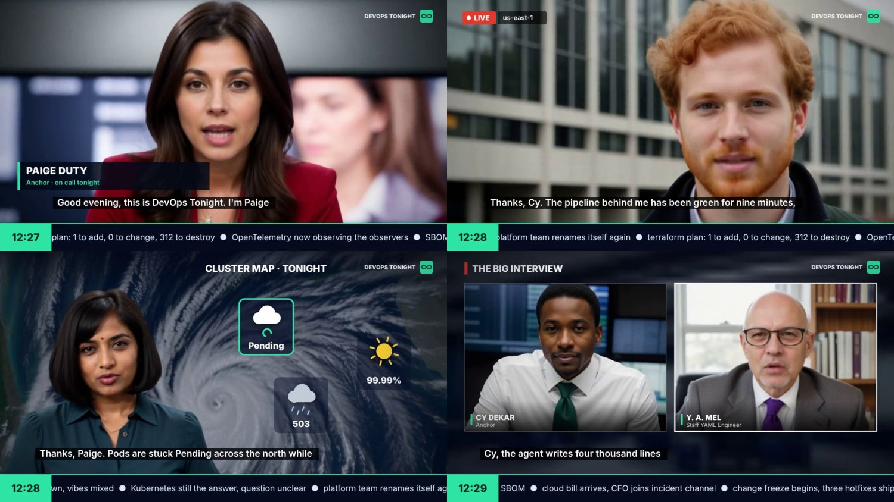
A photograph of nobody
Each presenter starts as a text prompt. A few candidates were generated at 768 × 432, about a minute each on the CPU. One was picked and refined to 1024 × 576. The studio, the office building and the bookshelves behind them are generated the same way.
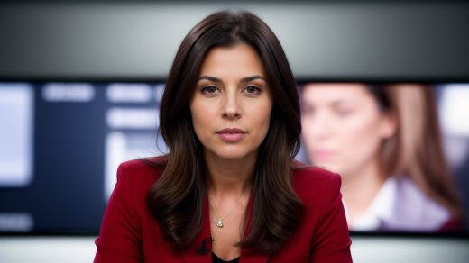
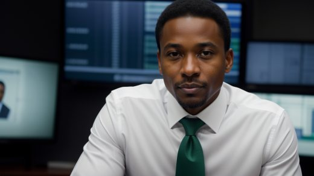
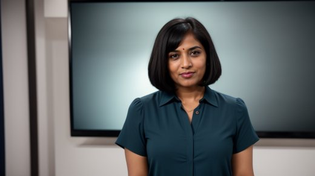
Cut the person out
A matting network separates the presenter from the background, hair included. A small face detector finds the eyes and the mouth, which every later step uses as its ruler. Two layers are kept: a cut-out that can move, and a plate with the person painted out, so that there is something behind the figure when it sways aside.
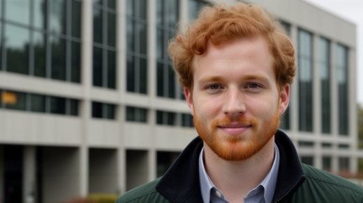
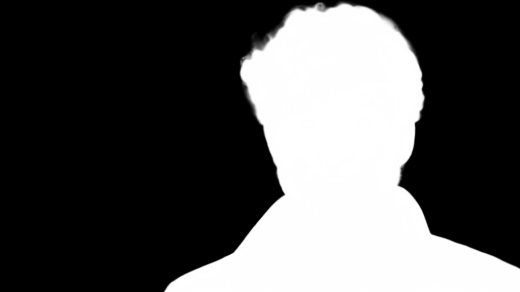
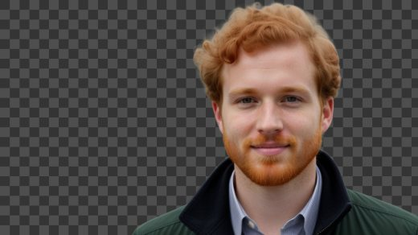
Re-pose the face 65 times
LivePortrait moves a face by shifting a few keypoints. Here it never makes video. It renders stills of the same face: a grid of mouths (jaw openings from shut to wide, each with the lips relaxed, spread, rounded or smiling), lips pressed together for m, b and p, lids half and fully closed, eyes left, right and down, the head turned and nodded, brows raised and lowered. Each pose takes about 6.5 seconds.
The photographs all smile with closed lips, and at first every presenter talked through that smile. The poses were rendered again around a relaxed mouth. The smile is kept for when someone is listening.
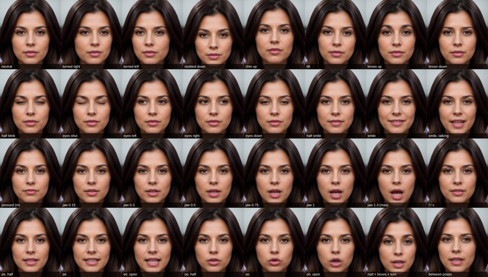
Record a voice and time every sound
A speech model reads each line three times. Whisper transcribes every take, so a take with a wrong word is never used. A phoneme recogniser is then aligned to the chosen take, which gives the start and length of every sound, and the pitch of the voice is traced. Three speech models were tried in turn; the video uses Phonon.
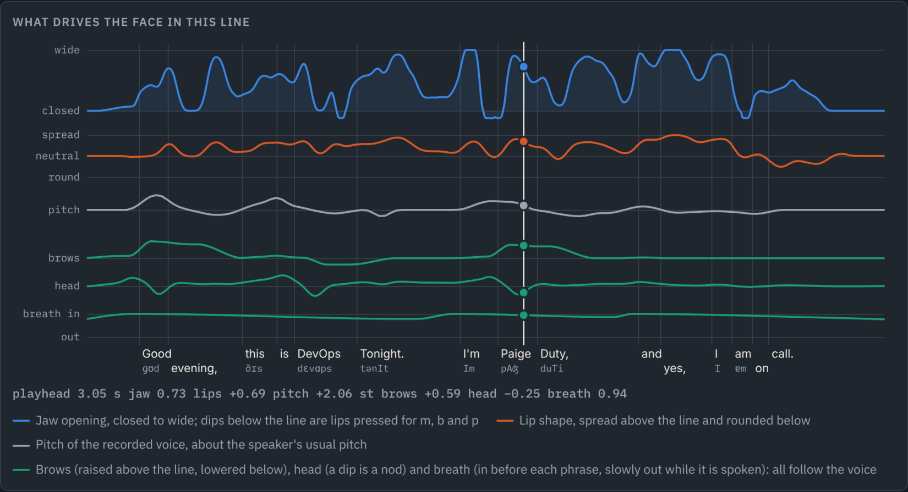
Ask a lip-sync network, then measure its answer
Hand-written rules for which sound opens the mouth how far looked wrong twice. So Wav2Lip is given each recording and each face, and paints the mouth for every fiftieth of a second.
Its picture is small and soft, and it is never shown. A landmark network measures the gap between the lips and the width of the mouth in it. The same measurement on each presenter's own poses says which pose shows that opening on that face.
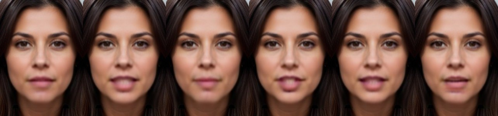
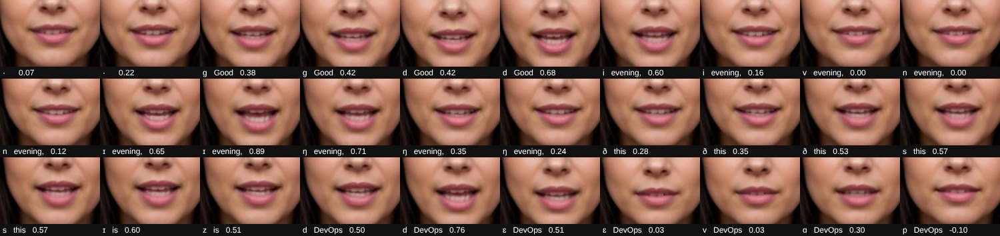
Turn two pictures into motion
Cross-fading between a head facing ahead and a head turned shows two faint heads at once. Optical flow between the two renders says where each point of the face goes instead.
Six such fields are stored on a coarse grid: turn right and left, nod down and up, brows up and down. A mesh is moved by a weighted sum of them, so the nose travels further than the ears, as it does on a real head.
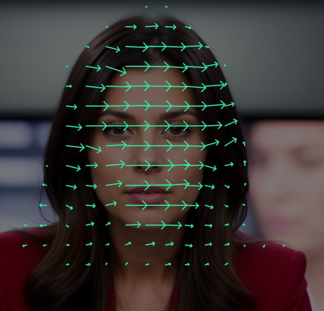
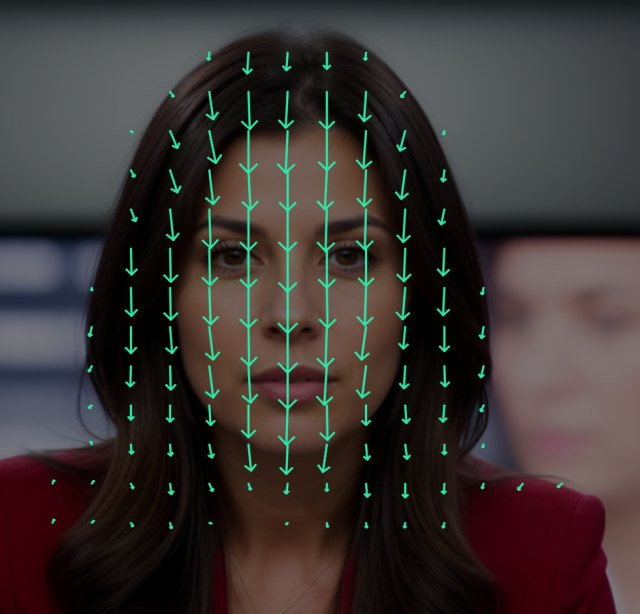
Find the body and the loose hair
A face-parsing network labels hair, skin, neck and cloth. Three maps come from its labels: where the torso is, where hair hangs free, and where wind can reach it.
The torso breathes in through the gap before each phrase and out while the phrase is spoken. It shifts its weight and turns a little with the head. Free hair hangs on a spring behind the head, so it follows late and swings past. The reporter's curls catch gusts.
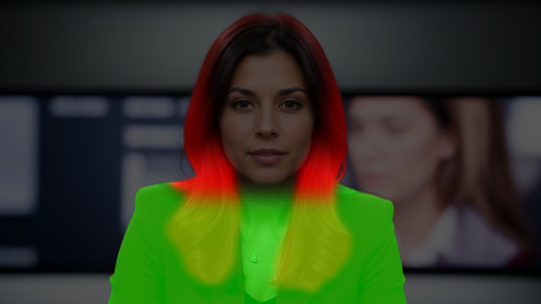
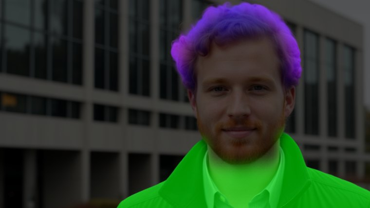
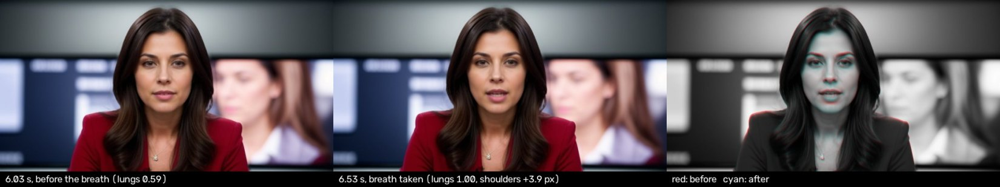
Composite every frame, then record it
The animation is a program in plain JavaScript, with no libraries. It holds 321 small images and sixteen recordings. For every frame it blends the nearest mouth and eye poses onto the cut-out, moves the result with a small mesh, and draws it over the plate with a slow camera move, grain, captions and graphics. Brows and nods follow the pitch and stress of the voice.
For the video, a headless browser draws the 3,215 frames one at a time and ffmpeg encodes them with the sound. The agent that built it cannot watch video, so movement was checked by measuring those frames. The chart shows that measurement for one presenter.
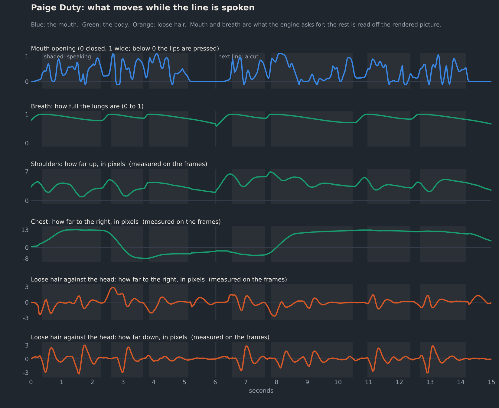
What ran locally
| Model | Its job here | Is its output in the video? |
|---|---|---|
| Realistic Vision 5.1 | The photographs of the five presenters and the six locations | Yes, as the stills |
| YuNet | Finds eyes and mouth | No |
| BiRefNet-portrait | Cuts each presenter out of the photograph | Yes, as the cut-out's edge |
| LivePortrait | Renders 65 poses of each face | Yes, as the mouth and eye poses |
| Phonon 31M | The voices in the video | Yes, as the sixteen spoken lines |
| Kokoro-82M, Chatterbox | Two earlier sets of voices, replaced | No |
| wav2vec 2.0 phonemes | Times every sound in a recording | As timing |
| Whisper base | Checks that each take says the right words | No |
| Wav2Lip | Says what the mouth should do for each recording | As two curves a line; never as pixels |
| 2DFAN4 | Measures lips, in Wav2Lip's picture and in the poses | No |
| BiSeNet face parser | Labels hair, neck and cloth for the body and hair maps | As three small maps a presenter |
- Nothing here is real. The presenters, the places and the voices are synthetic, the news is satire, and nobody's likeness or voice was copied.
- How it was built. In one long session by an AI coding agent (Claude Code) working from a dozen short requests. All models ran on four CPU cores with no GPU; making everything again takes about six hours and 11 GB of downloads.
- Where it stops. It is a warp of one photograph a person. Heads turn about six degrees at most, hands never appear, and hair moves as a sheet.
- Licences differ. Wav2Lip and the face parser's training data are for research and personal use. Check each model card before reusing anything.